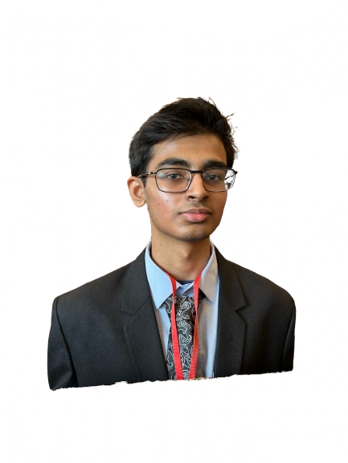

About Me
I am a dedicated student from Cypress, Texas who is proud to be the first in my family to attend college in the United States. I have a strong passion for both neuroscience and computer science, which led me to co-found a nonprofit organization called Neurogenesis, aimed at promoting neurological education and awareness. I have excelled in various science competitions and serve as the president of the SciWoods science club, Computer Science UIL and Outreach Club, and Social Studies UIL club, while also contributing to numerous clubs and volunteer initiatives. Balancing my academic pursuits with leadership roles, I am committed to making a positive impact in my community as I prepare for a future in medicine or neurocomputation.